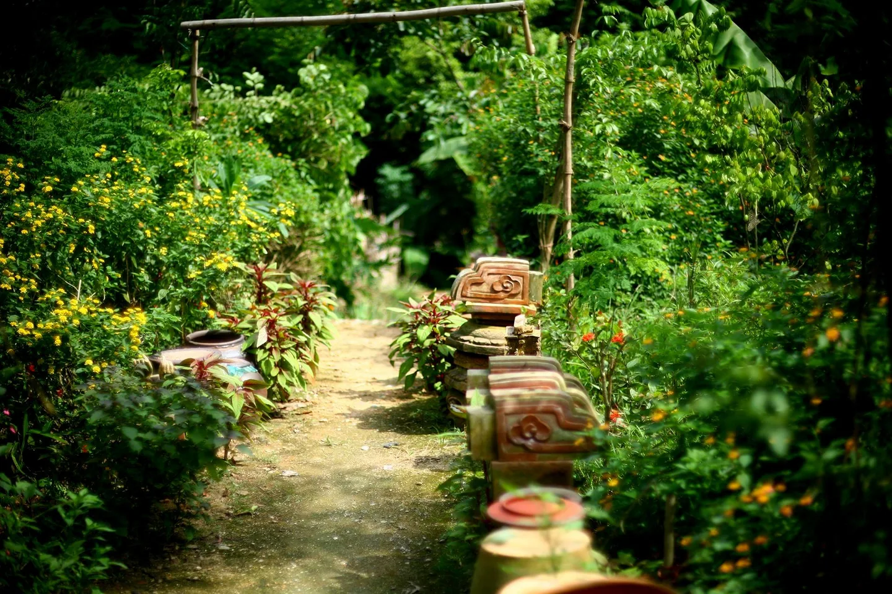
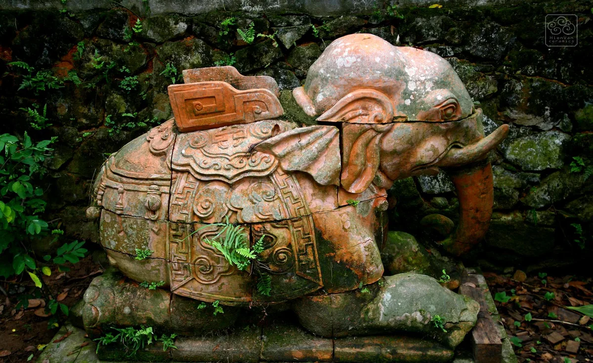

Hình của đất.
MỘT GÓC NHÌN VỀ GỐM HIÊN VÂN
HIÊN VÂN / BẮC NINH
GỐM VÀ ĐỜI SỐNG
Một dáng bình chia múi.
Một nhánh hoa vừa nở.
Những dáng gốm.
DANH MỤC / 06 HÌNH ẢNH
Từ hình dáng đến màu men.
Mở từng hình để xem câu chuyện phía sau.
Hình ảnh từ tư liệu của Hiên Vân Ceramics.Số hiệu H.01 đến H.06 dùng để tra cứu trong bản đề xuất này.
Từ một lò gốm
ở Hiên Vân.
GHI CHÉP TỪ XƯỞNG / 01
ĐẤT, MEN VÀ NHỮNG DẤU VẾT CŨ

HIÊN VÂN
BẮC NINHLÒ GỐM ĐẦU TIÊN
2004
BẮC NINHLÒ GỐM ĐẦU TIÊN
2004
Lò gốm đầu tiên được xây dựng tại Hiên Vân, Bắc Ninh năm 2004. Từ đó, xưởng tìm lại những nét đẹp trong gốm Lý, Trần, Lê, Mạc và đưa vào những dáng gốm dùng trong đời sống.
Họa tiết có thể bắt đầu từ một món cổ vật, một nét chạm đình chùa. Màu men có khi đến từ tro trấu, tro củi. Những điều quen thuộc ấy lại thành một vẻ mới khi đi qua bàn tay và lửa.
Đọc ghi chép gốc của xưởng
8 Chân Cầm, Hà Nội.
XEM GỐM TRỰC TIẾP
Đến để nhìn màu men dưới ánh sáng
và cầm thử một món gốm trên tay.